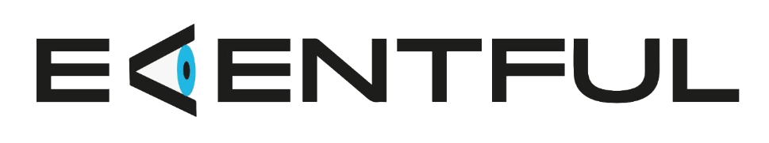
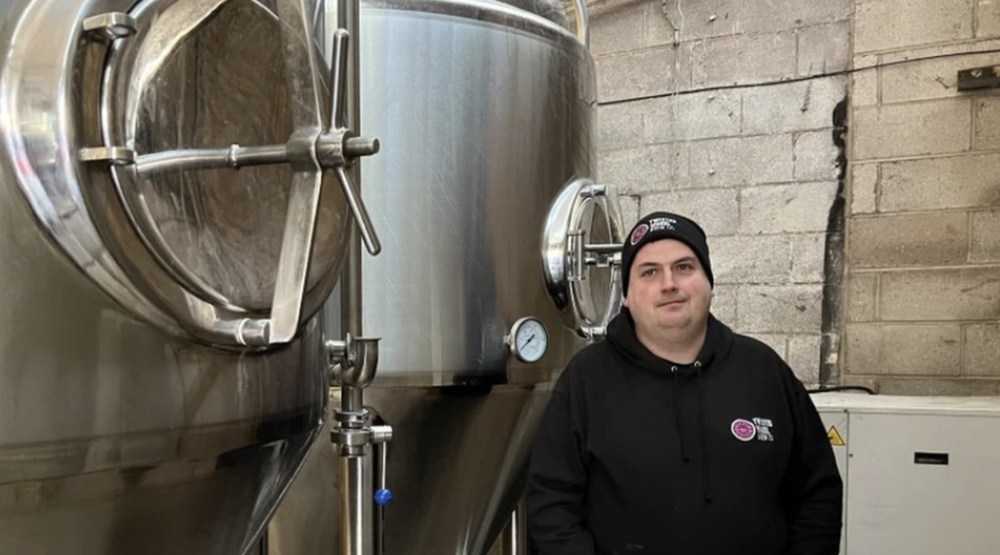
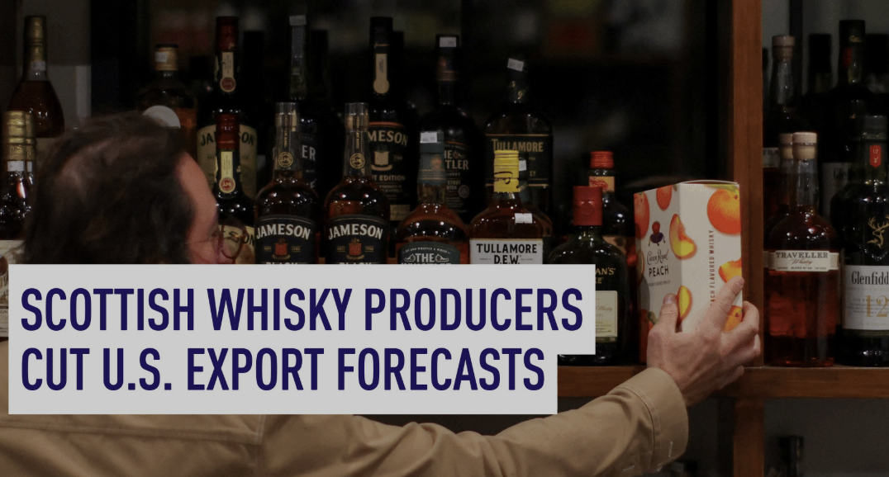
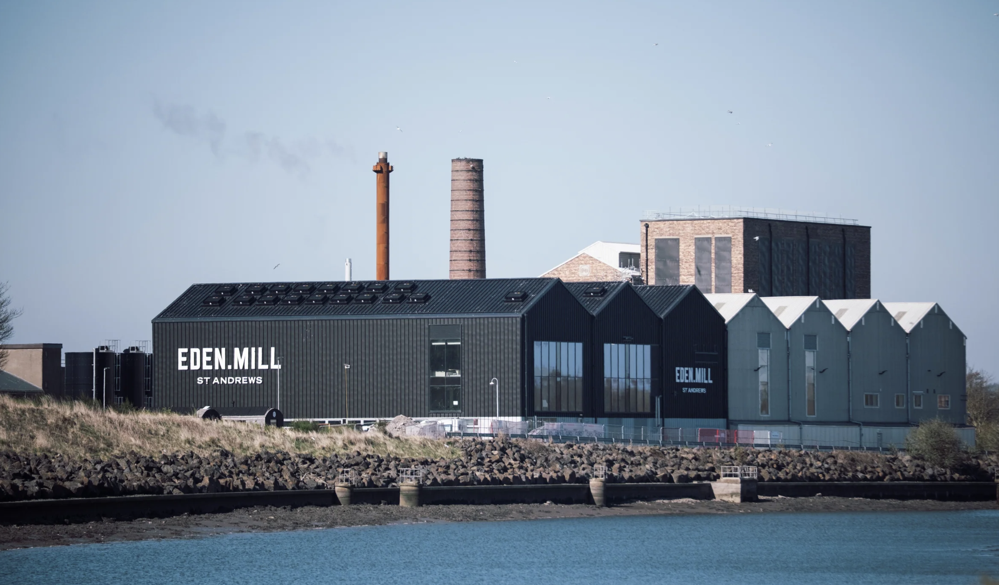
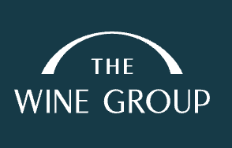
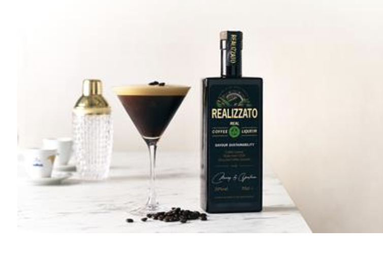
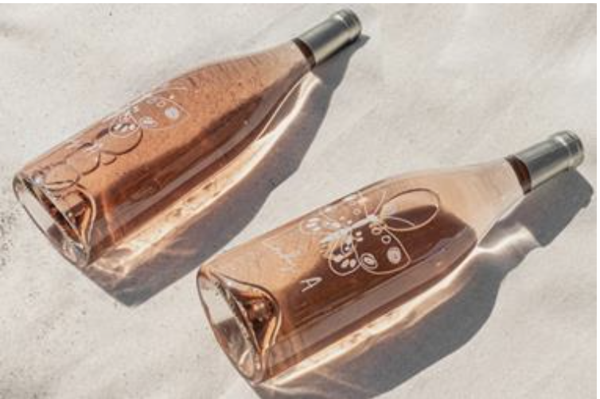
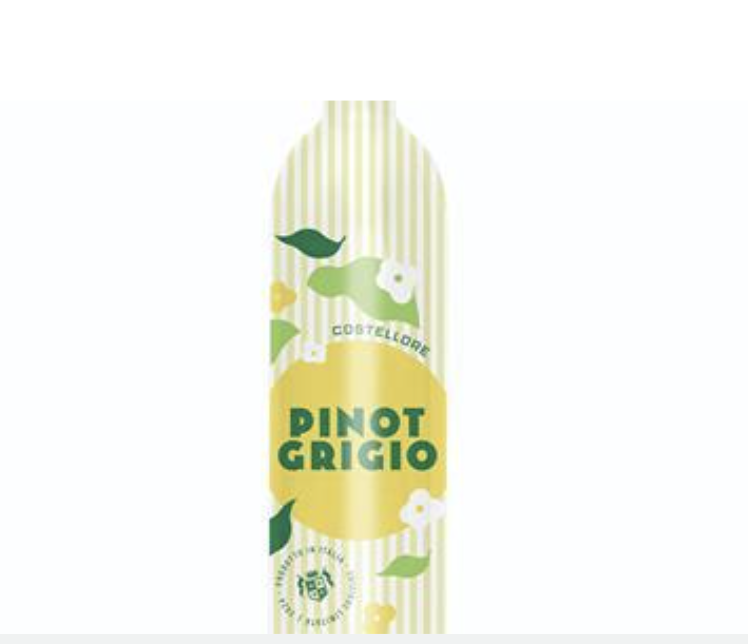
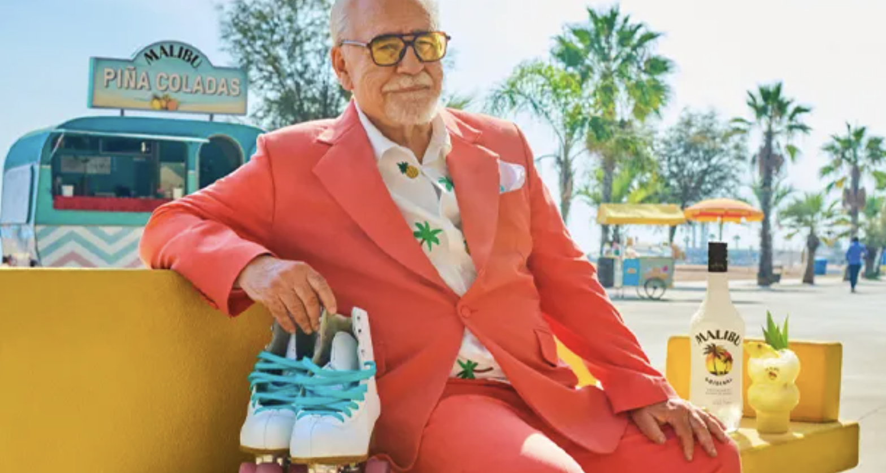
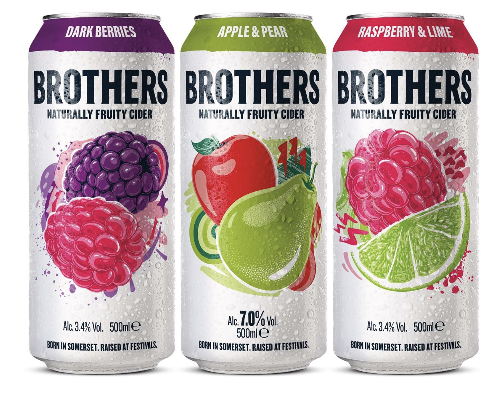

15 Nisan 2025

2000'li yıllarda yükselişe geçen ve özellikle genç yetişkinler arasında popülerleşen craft bira sektörü, son dönemde önemli bir duraklama dönemine girmiş durumda. Uzun yıllar boyunca büyümesini sürdüren bu kategori, artık hem tüketici ilgisindeki azalma hem de yatırımcı güvenindeki düşüş nedeniyle zorlanıyor.
Sektör kaynaklarına göre, yaklaşık 10-15 yıldır piyasada olan craft bira markaları, tüketiciler için artık yeterince yenilikçi görünmüyor. Özellikle genç tüketiciler, daha hafif ve farklı deneyimler sunan içecek kategorilerine yöneliyor. Alkolsüz ürünlerin çeşitlenmesi ve premium RTD segmentindeki büyüme, bu ilgiyi farklı yönlere kaydırıyor.
Yatırımcı tarafında da benzer bir kırılma söz konusu. Geçmişte büyük potansiyel vadeden craft bira markaları, artık bazı yatırımcılar tarafından fazla değerlenmiş olarak görülüyor. Bilinirliği sınırlı markalar, yatırım çekmekte ya da şirket satışlarında hedeflenen değerlemelere ulaşmakta zorlanıyor. Bu duruma örnek olarak, Ekim 2024'te gerçekleşen Gipsy Hill satışı dikkat çekiyor: Pazar değeri 21 milyon sterlin olarak gösterilen marka, yalnızca 5 milyon sterline satıldı.
Craft bira sektörü halen belirli bir tüketici kitlesine hitap ediyor olsa da, son gelişmeler pazarın doygunluk noktasına ulaştığını ve farklılaşma ihtiyacının her zamankinden daha belirgin hale geldiğini gösteriyor.
Kaynak: The Grocer

ABD'de yaklaşan seçim süreciyle birlikte gündeme gelen yeni gümrük vergisi açıklamaları, Birleşik Krallık'taki alkol üreticileri tarafından dikkatle takip ediliyor. Eski Başkan Donald Trump'ın yeniden göreve gelmesi halinde %10 oranında gümrük vergisi uygulayabileceğini belirtmesi, özellikle İskoç viski üreticileri arasında ciddi endişeye yol açtı.
İskoç viskisi, Birleşik Krallık'ın en önemli ihracat kalemlerinden biri olmaya devam ederken, ABD en büyük pazar konumunu koruyor. Bu nedenle, olası bir gümrük vergisi artışı sektörde büyük bir risk olarak görülüyor. Hatırlanacağı üzere, 2021 yılında ABD tarafından uygulanan %25'lik gümrük vergisi viski ihracatını yaklaşık dörtte bir oranında düşürmüş ve üreticiler 600 milyon sterlinlik bir kayıpla karşı karşıya kalmıştı.
Sektör temsilcileri, yeni bir vergi dalgasının hem ticaret hacmini daraltacağını hem de rekabet gücünü zayıflatacağını ifade ediyor. Sürecin nasıl şekilleneceği, hem üretici hem de ihracatçı firmalar açısından önümüzdeki dönemde yakından takip edilmesi gereken kritik bir gündem başlığı olarak öne çıkıyor.
Kaynak: The Guardian
C&C Group, premium İtalyan lager markası Menabrea'nın üretimini İtalya'dan Birleşik Krallık'a kaydırdığını duyurdu. Şirketin bu hamlesi, İtalyan biralarının Birleşik Krallık pazarındaki payını artırma hedefiyle atılmış stratejik bir adım olarak değerlendiriliyor. Üretim, grubun Glasgow'daki Tennent's damıtımevinde gerçekleştirilecek.
Üretim değişikliğiyle paralel olarak, markanın pazarda görünürlüğünü artırmaya yönelik yeni bir promosyon kampanyası da başlatılacak. C&C Group, geçtiğimiz ay Menabrea ürünlerini ilk kez teneke kutu formatında satışa sunmuş ve bu formatla daha geniş bir tüketici kitlesine ulaşmayı hedeflediğini açıklamıştı.
Yeni ambalajla birlikte, 4'lü 440 ml Menabrea lager paketleri Tesco ve Waitrose mağazalarında 6.50 sterlinden başlayan fiyatlarla satışa sunuldu. Ürünün önümüzdeki haftalarda Asda ve Morrisons mağazalarında da raflarda yerini alması bekleniyor.
Kaynak: The Grocer

İskoçya merkezli bağımsız üretici Eden Mill, hem cin hem de malt viski üretimi yapacağı yeni tesisinin kapılarını açtı. Yıllık bir milyon litre saf alkol üretim kapasitesine sahip olan tesis, aynı zamanda 300 varillik bir olgunlaştırma alanına da ev sahipliği yapıyor.
Yeni tesis sadece üretimle sınırlı kalmayacak; markanın deneyimsel pazarlama yaklaşımını destekleyecek bir müşteri alanı da planlanıyor. Aynı lokasyonda yer alacak bir kokteyl barı ve markaya ait ürünlerin satılacağı bir mağazanın Ağustos 2025'te faaliyete geçmesi bekleniyor.
Kaynak: Drinks International

California merkezli The Wine Group, Constellation Brands ile önemli bir satın alma anlaşmasına imza attı. Anlaşma kapsamında yaklaşık 2.870 hektarlık üzüm bağı ve üç üretim tesisi The Wine Group bünyesine katılacak.
The Wine Group, portföyündeki markaların yanı sıra, Netflix'in popüler programı Love is Blind'da yarışmacılara sunulan şarapları üretmesiyle de dikkat çekiyor. Bu yönüyle hem geleneksel hem de popüler kültüre entegre marka iş birlikleriyle öne çıkan şirket, satın almayla birlikte pazar konumunu daha da sağlamlaştırmayı hedefliyor.
Kaynak: The Drinks Business

Soho House'ın popüler ürünü olan Lady A Provence Rosé şarabı artık Marks & Spencer mağazalarında satışa sunuldu. Bu roze şarap, %12.5 alkol oranına sahip ve standart 75cl cam şişede tüketicilere ulaşıyor. Ürün, Provence bölgesinin karakteristik hafif ve ferahlatıcı lezzetini M&S müşterileriyle buluşturuyor.
Kaynak: The Grocer

Murray & Yeatman, kullanılmış kahve çekirdeklerinden damıtılarak üretilen Realizzato adında yeni bir likör piyasaya sürdü. %20 alkol oranına sahip bu yenilikçi içki, 50cl'lik cam şişelerde sunuluyor. Şirket, bu ürünün dünyada kullanılmış kahve telvesinden üretilen ilk likör olduğunu iddia ediyor ve sürdürülebilirliğe vurgu yapıyor.
Kaynak: The Grocer

Aldi, kendi markası olan Costellore Pinot Grigio beyaz şarabını Birleşik Krallık süpermarketlerinde bir ilk olarak alüminyum şişede satışa çıkardı. %11 alkol oranına sahip bu şarap, 75cl'lik geri dönüştürülebilir ve daha hızlı soğuyan alüminyum şişelerde 5.99 GBP fiyatla satılıyor.
Kaynak: The Grocer

Malibu, yaz sezonunu "Succession" dizisiyle tanınan aktör Brian Cox'un yer aldığı yeni bir reklam kampanyasıyla başlattı. Kampanya, Cox'u alışılagelmiş ciddi rollerinin aksine, tatilin ve işten uzaklaşmanın keyfini çıkarırken gösteriyor.
Kaynak: Talking Retail

Brothers Cider, İngiltere'nin ikonik müzik festivali Glastonbury'nin 2025 yılındaki resmi elma şarabı (cider) ortağı olacağını duyurdu. Şirket, bu sponsorlukla festival katılımcılarına özel etkinlikler ve deneyimler sunmayı planlıyor.
Kaynak: Drinks Retailing News